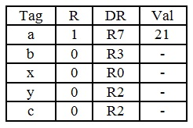

-
- Byte on bus
Addr[1:0] - Interleave bits
Addr[4:2] - Chip address
Addr[7:5] - Row decode
Addr[11:8]
- Byte on bus
577 Cycles. The first 8 memory accesses, A[0][0] to A[0][7], must occur sequentially with no overlap since they are all acesses to the same bank. Thus, it would take 80 cycles for the 1st 8 memory accesses, with the 8th access starting in cycle 70. Since the 8th and 9th memory accesses, A[0][7] and A[1][0], respectively, are to different banks, the accesses can overlap, and the 9th access can start in cycle 71 (70 cycles for the 1st 7 accesses plus 1 additional cycle of the 8th access). Continuing with this logic, the access to A[2][0] could start in cycle 142 (71x2). Finally, the access to A[7][0] could start in cycle 497 (71x7). Now all that remains are 8 more memory accesses, all to the same bank (A[7][0] to A[7][7]). This takes another 80 cycles, bringing the total to 577 cycles (497 + 80).
If the memory were not interleaved, all 64 memory accesses must happen sequentially with no overlap, so it would take a total of 640 cycles (64*10). Therefore, we do gain some benefit from this interleaving scheme, but not that much.
-
Yes, a change can be made. The new bits are:
- Byte on bus
Addr[1:0] - Interleave bits
Addr[7:5] - Chip address
Addr[4:2] - Row decode
Addr[11:8]
87 Cycles. With the new interleaving scheme, consecutive memory accesses are to different banks, so the accesses can overlap. The 1st access, A[0][0], would begin at cycle 0, the 2nd, A[0][1], at cycle 1, and so on. The 8th access, A[0][7], would start at cycle 7. However, the 9th access, A[1][0], cannot start at cycle 8. It would have to wait 2 more cycles for the 1st access to finish since it is on the same bank as the 1st access; therefore, it would start at cycle 10. Continuing this logic, the access to A[2][0] would start at cycle 20, and finally, the access to A[7][0] would start at cycle 70. Now, all that is left are 8 accesses, but they are all to different banks so they can start 1 cycle after each other. The access to A[7][1] would begin at cycle 71, A[7][2] at 72, and finally A[7][7], the last memory access, would begin at cycle 77 and, therefore, end at cycle 87.
- Byte on bus
Only one line of code needs to be changed:
sum = sum + A[i][j]; to sum = sum + A[j][i];Alternatively, you could keep that line the same, but swap the variable (
i/j) of the inner and outer loops as shown below.Original code:
for(i = 0; i < 8; ++i){ for(j = 0; j < 8; ++j){ sum = sum + A[i][j]; } }New code:
for(j = 0; j < 8; ++j){ for(i = 0; i < 8; ++i){ sum = sum + A[i][j]; } }87 Cycles, for similar reasons to the explanation provided in part (c).
Postponed until PS4.



Interleave into 64 banks in order to hide the latency in sequential accesses (note, minimum needed is 37 banks but one would really prefer to use a power of 2, therefore 64).